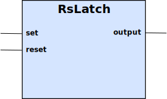

The RsLatch is a single-bit memory, set and reset by the two different inputs.

Table 22. Inputs
| Name | Type | Default | Description |
|---|---|---|---|
set | Boolean | false | The set input will set the output to |
reset | Boolean | false | The reset input will set the output to |
Table 23. Outputs
| Name | Type | Default | Description |
|---|---|---|---|
output | Boolean | false | The output is set to |
The RsLatch is a single bit memory, which is set to true when the set input is set to true and set to false
when the reset input is set to true (provided the set input is no longer true).
Typically, the set and reset inputs are triggers, which go to true during a short period of time, and that this
occurrence is to be remembered.
If the set input is going to true, it sets the output to true. The output will remain true after the
set input has gone false. The set input has higher priority than the reset input, so if both are true the
output will be true.
If the reset input is going to true, it sets the output to false. The output will remain false after the
reset input has gone false. The set input has higher priority than the reset input, so if both are true the
output will be true.
The output will remain in the same state as it was previously, until either set or reset inputs are changed.
If set is true the output will be set to true, regardless of the state of reset input.
If the reset is true and the set is false, then and only then the output will be set to false.